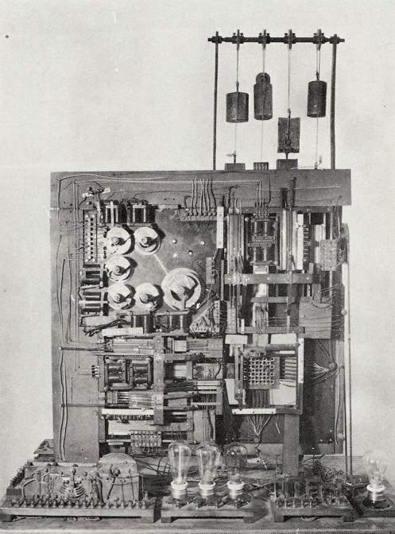

History of AI
People have always entertained the idea of machines with their own intelligence and sentience.Just look at the countless books, movies, shows and other media about this topic, its benefits and its negative aspects.
One of the earlier mentions of ai was an idea similar to algorithmic text generation in Jonathan Swift's novel "Guilliver's Travels". Where a machine made to generate ideas by turning the handles to make wooden blocks with words on them rotate, was mentioned. If machines (will ever) have sentience is more a philosophical matter, but machines with intelligence are no longer a thing of the future. It hasn't been a thing of the future since 1912, when Torres Quevedo built El Adjedrecista. A chess playing machine which could play chess games consisting of two kings and a rook. Where El Adjedrecista would play the white king and white rook against the black king, with the king placed on a8 and the rook on b7. El Adjedrecista could counter any defense with fifty moves or less.
Torres Quevedo arranged a variety of components like variable resistors, lead-acid accumulators, electromagnets and mercury tilt switches that controlled the machine's behavior. When the human would set their next move, electrical contacts under the squares of the chessboard would pick up on a change in voltage over the metal chessboard. Every shift in polarity on the board would trigger the series of relay circuits and through additional electrical connections El Ajedrecita's arms would be enabled, and the machine would pick up its own pieces and move them to counter its opponents' move. In its most basic components, El Ajedrecista worked by breaking down the chess positions into strips of binary inputs to show if a piece is present or not present.
Besides its undeniable use as entertainment, Torres Quevedo didn't create El Ajedrecista as just a fun novelty. The chess machine proved that a machine could make analytical choices comparable to decisions made by a real human mind though thorough mechanization. Torres Quevedo wrote many papers on El Ajedrecista and how its mechanical "mind" resonated with human ways of learning and observation. El Ajedrecista is in a lot of ways the big brother of modern ai. El Ajedrecista's systematic way of countering opponents' moves prefigured the algorithmic mechanisms used at the base of a lot of current day ai machines. Another way El Ajedrecista planted its roots in modern ai, is in the ai models who absorb knowledge and show rezoning capabilities that stem from the binary ways of reworking input into actions that Torres Quevedo first
thought of in 1912 while creating the infamous El Ajedrecista.
.

Naar begin pagina